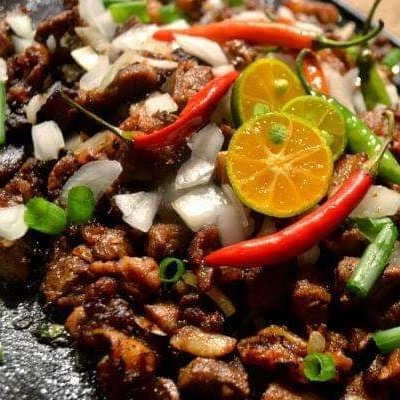

HOME
Pork Sisig

This is a Spicy Pork Sisig we will be making!
Sisig is also one of the Filipino food that is incredibly tasty and spicy! It is also known as Sizzling Pork. As usual, there are a couple variations in cooking sisig but I will be giving you an easy to follow guide for newbies. This recipe is something that I learned back when I was working at an eatery and I didn't even know I can cook this stuff!
First, you're gonna need the following ingredients.
- 1 lbs of Pork Belly
- 1/2 cup soy sauce
- 1 pc of Red Onion
- a thumb of Ginger
- 3-5 pcs of Chilli Pepper or Siling Labuyo
- 1-2 pcs of Calamansi
- 1/2 cup of Pure Mayonnaise
Now let's get cooking once you got everything ready!
- Boil the pork for around 30 to 45 minutes in medium heat.(Don't slice it yet.)
- Slice! Slice! Slice! While waiting for the meat to be cooked, we're gonna prepare the rest of the ingredients.You just have to slice everything in small pieces! Except for the Calamansi, you gotta slice it in half.
- Now, once the pork is cooked, we will go ahead and grill it to give it a good texture. Grill it until it's a bit dark brown. If you don't have a place to grill it, you may fry the pork instead, remember this ain't sliced yet. You may try to use a non stick pan and put a little bit of oil then fry the pork, don't deep fry it!
- Once you're done grilling or frying it, you may now chop the pork to small cube-like pieces. If it's still too hot, then simply wait till it get's a bit cold.
- So everything is now ready! Almost done! The next part should be done very quickly. Remember, don't take too much time in doing the rest of the steps, it should be done within 3-5 minutes!
Simply sauté the following ingredients in a pan in medium low heat; onion, ginger and chilli.
- Add the chopped pork into the mix then put some flavor in it using soy-sauce, salt, pepper and of course MSG! Mix! Mix! Mix!
- Finally! You can now add the Mayonnaise, more mixing and then serve! Put the calamansi on top for decoration and some left over chilli as well.
That's it! Enjoy your meal and don't forget to pair it up with a whole lot of rice!